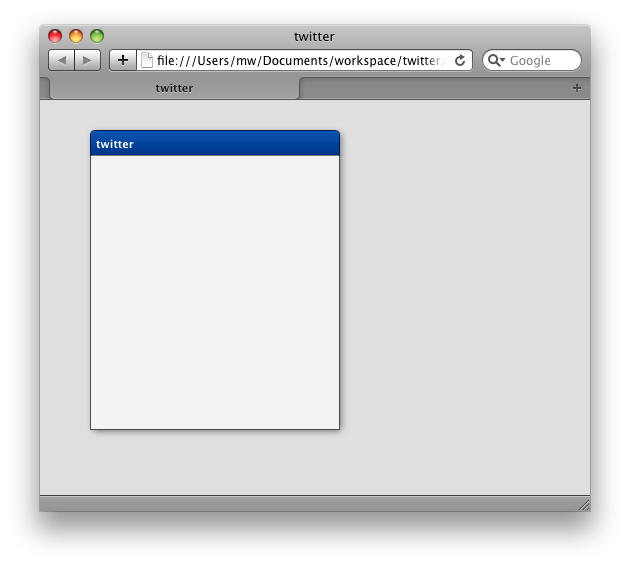

Tutorial Part 1: The Beginning of a twitter App¶
The Missing Manual¶
We have heard it a couple of times: Users are missing a tutorial a bit more complex than the simple "Hello World" tutorial we already have. Today, we want to close that gap between the first tutorial and the demo applications included in the framework like the Feedreader.
As you sure have read in the headline, we are building a simple twitter application. twitter is a well known service for posting public short messages and has a good API for accessing data. The following mockup shows you how the application should look like at the end.

If you take a closer look at the mockup, you see a window containing a toolbar, a list, a text area and a button to post messages. This should cover some common scenarios of a typical qooxdoo application.
In the first part you'll learn how to create a new application and how to build a part of the main UI. But before we get started, be sure you looked at the "Hello World" tutorial. We rely on some of the fundamentals explained there.
Getting started¶
The first step is to get a working qooxdoo application where we can start our development. You should already have the qooxdoo SDK and know how to use create-application.py, so we just create an application called twitter.
create-application.py --name=twitter
After that, we should check if everything works as expected. Change the directory to twitter and run ./generate.py. Now the skeleton application is ready to run and you can open the index file located in the source directory. After that, open the Application.js file located in source/class/twitter/Application.js with your favorite editor and we are set up for development!
You should see the unchanged skeleton code of the application containing the creation of a button. We don't need that anymore so you can delete it including all the listener stuff.
The first part is to create a Window. As the Window contains all the UI controls, we should extend from the qooxdoo Window and add the controls within that class. Adding a new class is as easy as creating a new file. Just create a file parallel to the Application.js file named MainWindow.js. Now it is time to add some code to that file. We want to create a class so we use the qooxdoo function qx.Class.define for that. Add the following lines to your newly created file.
qx.Class.define("twitter.MainWindow",
{
extend : qx.ui.window.Window,
construct : function()
{
this.base(arguments, "twitter");
}
});
We have created our own class extending the qooxdoo Window. In the constructor, we already set the caption of the window, which is the first constructor parameter of the qooxdoo window. So you already have guessed it, this.base(arguments) calls the overridden method of the superclass, in this case the constructor. To test the window, we need to create an instance of it in the main application. Add these two lines of code in the Application.js file to create and open the window. Make sure to add it at the end of the main function in the application class.
var main = new twitter.MainWindow();
main.open();
Now its time to test the whole thing in the browser. But before we can do that, we need to run the generator once more because we added the window class as new dependency. So run ./generate.py and open the page in the browser. You should see a window in the top left corner having the name "twitter".
Programming as Configuring¶
The last task of this tutorial part is to configure the window. Opening the window in the left corner does not look so good, so we should move the window a bit away from the edges of the viewport. To do this add the following line to your application file:
main.moveTo(50, 30);
Another thing we should configure are the buttons of the window. The user should not be able to close, minimize nor maximize the window. So we add the following lines of code in our windows constructor.
// hide the window buttons
this.setShowClose(false);
this.setShowMaximize(false);
this.setShowMinimize(false);
The last thing we could change is the size of the window on startup. Of course the user can resize the window but we should take care of a good looking startup of the application. Changing the size is as easy as hiding the buttons, just tell the window in its constructor:
// adjust size
this.setWidth(250);
this.setHeight(300);
At this point, your application should look like this.

Thats it for the first part. If you want to have the code from the tutorial, take a look at the project on github and just fork the project. The next part of the tutorial will contain the building of the rest of the UI. If you have feedback or want to see something special in further tutorials, just let us know!